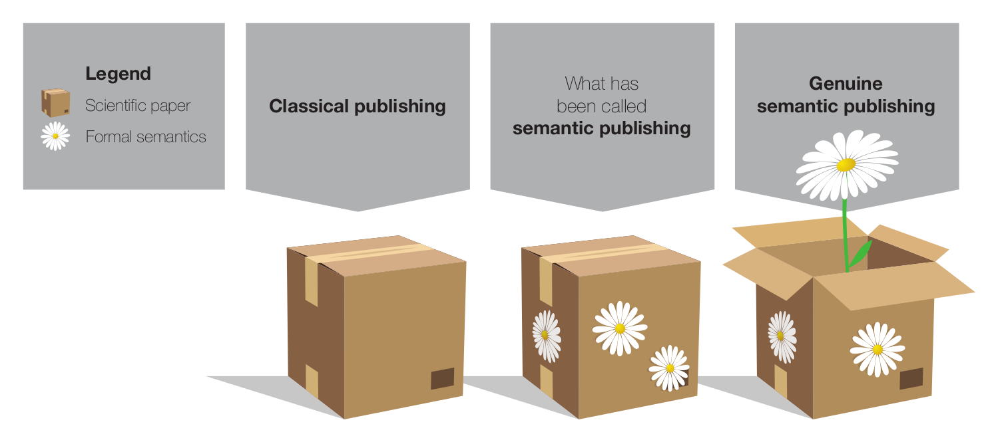
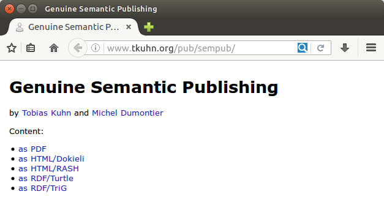

Several approaches and systems have been presented for what has been called semantic publishing. Closer inspection, however, reveals that these approaches are mostly not about publishing semantic representations, as the name seems to suggest. Rather, most approaches take the processes and outcomes of the current narrative-based publishing system for granted and only work with the already published papers. This includes semantic annotations, semantic interlinking, semantic integration, and semantic discovery, but with the semantics coming into play only after the publication of the original article. While these are interesting approaches, they fall short of providing a vision to transcend the current publishing paradigm. We argue for taking the term semantic publishing literally and work towards a vision of genuine semantic publishing, where computational tools and algorithms can help us with dealing with the wealth of human knowledge by letting researchers capture their research results with formal semantics from the start. We argue that genuine semantic publications should come with formal semantics as an integral and primary component at the time of publication, that these representations should have essential coverage in the sense that they cover the main results, that they should be authentic in the sense that they originate from the authors, and that they should be fine-grained and light-weight for optimized re-usability and minimized publication overhead. This paper is in fact not just advocating our concept, but is itself a genuine semantic publication, thereby demonstrating and illustrating our points.
Many scholars have pointed out that the classical way of publishing scientific articles is ill-suited to deal with the rapid growth of both, volume and complexity, of scientific contributions . To overcome these problems, next generation scientific publishing has to respond to the increasing importance of datasets and software, and needs to provide methods to automatically organize reported scientific findings. Perhaps the most important shortcoming of the current publication system is that scientific papers do not come with formal semantics that could be processed, aggregated, and interpreted in an automated fashion.
Semantic publishing is a general approach to tackle this problem using the concepts and tools of the Semantic Web and related fields. This idea was basically born together with the idea of the Semantic Web itself. In 2001, Tim Berners-Lee and James Hendler sketched how they expect researchers in the future to produce machine-readable descriptions of their experiments and findings, in the form of mark-up of their research papers or as independent representations made public on the web . Unfortunately, subsequent work has deviated from this general proposal.
The topic of semantic publishing has received considerable attention during the last few years, with workshop series on Semantic Publishing (SePublica) and Linked Science (LISC) and Semantic Publishing Challenges at ESWC conferences . However, as we argue below, these approaches interpret the term semantic publishing in a non-intuitive way: Instead of changing the publishing process, they mostly take existing classical publications as their starting point and simply apply semantic technologies on them, mostly without touching the publishing process or the object that is being published. This leads them to propose solutions that are quite conventional, and fall short of providing a vision for the long-term future.
Curiously, existing approaches that use the term semantic publishing are mostly not really about semantic publishing in the literal sense, while the approaches that do deal with it typically do not use that name. To resolve that confusion, we introduce below the notion of genuine semantic publishing.
Semantic publishing has been defined as "anything that enhances the meaning of a published journal article, facilitates its automated discovery, enables its linking to semantically related articles, provides access to data within the article in actionable form, or facilitates integration of data between papers" . While this definition accurately reflects what has been referred to as "semantic publishing" in the recent literature, we think that it is in one way too restrictive and in another way too inclusive if we want to be faithful to the literal and intuitive meaning of the term and if we aim to follow the spirit of the Semantic Web vision.
In our view, the definition above is too restrictive in the sense that semantic publications according to this definition are required to accompany a "journal article" or a "paper." An entity that contains only a semantic representation of a scientific result, without an accompanying narrative article, could not be considered a semantic publication. On the other hand the definition is too inclusive, in our view, in the sense that it covers very shallow approaches that add little — if anything — to established approaches of publishing. For example, letting authors choose keywords from standardized vocabularies for their paper — as many journals do — in fact "enables its linking to semantically related articles," and therefore by the definition above makes it a semantic publication. As another example, a semantic annotation performed by a third party on an article "enhances the meaning of a published journal article" and therefore would have to be called a semantic publication, even if the semantic annotation is not even made public.
In general, the existing literature seems to interpret the term "semantic publishing" as "adding semantics to something that is published" instead of the more intuitive readings of "publishing something that is semantic" or "publishing in a semantic manner." (We are using the word semantic in its narrow technical sense of carrying a formal logic-based representation of the content's meaning.)
We argue here for a more intuitive definition of semantic publishing that is broader in the sense that no narrative article needs to be present, and that is at the same time narrower in the sense that the semantic representation has to be a first-class object created and published by the authors. We propose the definition that genuine semantic publishing occurs when somebody publishes a work that includes authentic and fine-grained representations of its content in a semantic notation, where these semantic representations have essential coverage and are a primary component of the published entity. We explain in more detail below what we mean by authentic, fine-grained, essential coverage, and primary component}.

illustrates our point with a simple analogy. Classical papers are shown on the left hand side as boxes that are closed and hard to access for automated techniques. Existing approaches to what has been called semantic publishing merely adorn this box with formal semantics — represented by flowers in the picture — but leaving it closed. This adornment is very useful, to be sure, but it does not reach to the main content of the box. By only looking at the formal semantics, one can possibly find out the topic of the paper but not what the paper is actually claiming: The main message is missed. Moreover, the adornment is often attached at a later point, after the box has been shipped so to say, and is therefore not a proper part of it. Speaking in terms of this metaphorical image, we argue that we should open the box and let semantics bloom right from the inside. We should represent the paper's main message with formal semantics. As we see on the right hand side of the figure, this metaphorically turns the box into a flowerpot. Now semantics is the main content, and the scientific paper has become a container for semantics instead of a closed box with a secondary usage as a pin board for semantic annotations.
It seems to be a common unquestioned assumption that the semantic representation of knowledge has to start from a textual representation, and therefore writing a statement down in natural language always needs to be the first step. For example, we can read in a paper on semantic publishing that "learning how the brain creates and decodes meaning from text is essential if we are to provide better tools for scientific inquiry" and that we need to "train computers to help us read scientific text" . While these are certainly interesting and important problems, it is not obvious why they are essential if we take the approach of semantic publishing literally, i.e. if we ensure that the published artifacts come with semantic representations from the start. There is no law of nature that research findings can only be formalized after they have been expressed in a narrative text. It can very well be the other way round, such as a researcher writing a narrative text verbalizing existing formal statements she has come up with. More likely, these two will go hand in hand in an iterative process, but this does not require computers to help us read scientific text. However, many articles in the area of semantic publishing seem to make this implicit assumption, as exemplified by papers presented at semantic publishing workshops claiming that "annotations on all levels pave the way for shared knowledge understanding" and that "semantic publishing [...] can be defined as the activity of enhancing a document" , among many others (e.g. ). The entire approach of semantic annotation is based on this text-first paradigm, which is a perfectly valid approach but is surely not the only possibility.
We get a similar picture if we look at the Semantic Publishing Challenge held at the Semantic Web conferences ESWC from 2014 until 2017 . There were three tasks defined for each of these three challenges, but none of them actually deals with publishing. Instead they are about automatically extracting and interlinking semantic data from existing publications. Only the "in-use" task of the first challenge was general enough to not exclude publishing ("showcase the potential of Semantic Web technology for enhancing and assessing the quality of scientific production"), but it did not specifically mention the publishing process either. Unsurprisingly then, the approaches presented at these challenges deal with extraction from and annotation of articles that are already written and published (with the only exception being a paper introducing a publishing platform for Research Objects ).
As we have shown above, most approaches that go under the label semantic publishing are not actually about publishing, and the approaches that do target the publication of semantic representations cover different aspects thereof that only partly overlap. We therefore think that there is a need for clear criteria of genuine semantic publishing. As we started to argue above, important aspects of semantic publishing concern the authoritativeness and essential coverage of semantic representations, as well as their status in relation to narrative articles and their granularity level.
The first aspect we would like to discuss here is what we call essential coverage of semantic representations with respect to the entity to be published. A representation has essential coverage with respect to a work if it covers (at least) the essence of the work. The essence of a work is its main message, which for scientific articles normally consists of the main claims, findings, and arguments. A semantic representation may not cover all aspects discussed and described throughout a scientific work, but for it to have essential coverage it has to cover the main points: If you had to summarize a paper in one sentence, the content of this sentence has to be present in the semantic representation too. In other words, it is not sufficient to focus on what is easy to represent; we have to focus on what is important. One can also see it as a kind of democratization process of making automated agents first-class citizens: English speaking agents (e.g. human researchers) get the main content of the work in their English based representation (i.e. the narrative text); so RDF speaking agents (e.g. Linked Data aware software) should also get the main content of the work in their RDF based representation. As we will see below, this perspective aligns very well with the well-established Web technique of content negotiation.
Another important aspect is the authoritativeness of the source of the semantic representations, which determines the authenticity of these representations. Semantic representations can only be considered authentic if they originate from an agent that is authoritative in the given situation. In the case of the publication of a scientific result, the only authoritative source are the researchers (which are called authors in this context). In other words, semantic representations of scientific results are only authentic if they are provided by the researchers themselves. It has long been known in the area of knowledge engineering that the process of formalizing expert knowledge is not merely a process of "transferring" or "converting" knowledge from existing representations inside the heads of experts to formal representations of a form that can be stored in a knowledge base. Rather it has to be seen as a creative modeling process where formal structures are generated that existed only in an incomplete, implicit, and unconscious form in the experts' heads. Explaining a result in a narrative is simpler than formally modeling it, in the sense that natural language allows the writer to remain vague and even ambiguous. Accurately modeling knowledge only from a narrative text without a further connection to the authoritative source is therefore in general not just difficult but strictly impossible. Genuine semantic publishing requires the authors of scientific results to perform the modeling task themselves, because they are — by definition — the only authoritative source. We claim that — contrary to many existing approaches — we should not try to relieve the authors of this burden (though we should of course try to help them). Otherwise, the semantic representations cannot be considered authoritative and should therefore not be considered part of the publication's content (unless the person who produces the formal representations becomes a co-author), and we would end up with a situation where semantic representations are disconnected from what is published, which is against the essence of the semantic publishing idea. As Tim Berners-Lee and James Hendler made clear when the Semantic Web was just about to come into existence as a research field, it "involves asking people to make some extra effort" . In the case of scientific publishing, it involves asking authors to make the extra effort of providing formal semantic representations of their findings.
Furthermore, we argue that the semantic representations need to be a primary component with an existence in their own right, to call it a genuine semantic publication. The main thing that is published needs to have a semantic representation, and this semantic representation needs to have an independent existence. We cannot call something a genuine semantic publication if the semantic representations are attached to an already published article at a later point, or if they can only be interpreted in the context of the narrative article. Neither should these semantic representations be considered just another type of supplementary material, listed somewhere at the very end of the article as an noncommittal extra file.
Finally, we argue that — for practical reasons — the semantic representations should be light-weight and fine-grained. More so than narrative texts, semantic representations can be broken down into independent pieces that can be interpreted independently. This is an important and valuable feature of declarative logic representations on which most semantic technologies are built. It would therefore be foolish to propose semantic publishing solutions that would not allow people to exploit this nice property. Such light-weight semantic publications might consists of just a single statement (like "X is related to Y"), and for larger chunks of semantic representations we should make it possible to refer to such individual statements in a fine-grained way (e.g. refer explicitly to the statement "A causes B" within a larger set of statements).
Based on these arguments, we define that genuine semantic publishing needs to comply with the following criteria:
Most, maybe all, existing approaches on what has been called semantic publishing comply with the first criterion, but only a few of them propose or support representations that comply with the others. We illustrate below that these criteria are in fact not difficult to achieve with existing technologies.
It turns out that all the technologies needed for applying genuine semantic publishing are already available and most of them are very mature and reliable. There are no technical obstacles preventing us from releasing our results from today on as genuine semantic publications (though more work is needed on nice and intuitive end-user interfaces to make this process as easy as possible).
The paper that you are reading is in fact a genuine semantic publication. It has different representations for different types of usage. You might be reading these lines while sitting on a beach and reading from a sheet of paper printed from the article's PDF version, or you might be reading it in your office from a web page in HTML format within your browser window. In either case, these representations contain the narrative text, which we carefully wrote to explain and motivate our ideas to human readers. But we also make our work available to automated agents (i.e. any kind of software programs), for which we have different representations that consist of formal RDF statements instead of narrative text. Importantly, these RDF statements convey the same main message as the narrative text: They are different representations of the same work!
To formally represent the main content of the paper, we can make use of existing ontologies and vocabularies, such as CiTO and SKOS . Specifically, our paper's main message is the advocacy of the new concept of genuine semantic publishing, which can be expressed as follows in the Turtle RDF notation :
p:paper cito:describes p:GenuineSemanticPublishing ;
cito:supports p:GenuineSemanticPublishing .
There is to our knowledge no existing ontology that would exactly capture the relation of a publication advocating a given concept, but the combination of the two relations describes and supports from the CiTO ontology comes close.
We as authors should of course say a bit more about this new concept, most importantly that it is related to the existing concept of semantic publishing:
p:GenuineSemanticPublishing skos:related dbpedia:Semantic_publishing .
And we can express our critical position on that concept:
p:paper cito:critiques dbpedia:Semantic_publishing .
Next we can formally represent the five criteria based on which we define our new concept:
p:GenuineSemanticPublishing skos:definition
p:GenuineSemanticPublishingCriteria .
p:GenuineSemanticPublishingCriteria dct:hasPart
p:GenuineSemanticPublishingCriterion1 .
p:GenuineSemanticPublishingCriterion1
dct:title "First criterion of genuine semantic publishing: machine
interpretability" ,
dct:description "A scientific work needs to come with formal representations
that are semantic, in the sense that ..." .
p:GenuineSemanticPublishingCriteria dct:hasPart
p:GenuineSemanticPublishingCriterion2 .
...
We can try to capture part of the content of these criteria in RDF as well, but at some point we have to stop and be content with an informal description in natural language (at the latest when we hit the symbol grounding problem). However, we believe that it is always possible to find a formal representation of the main content at the highest level, such as introducing and advocating a new concept, even though we will mostly not be able to provide a complete formal definition. In this sense, such a representation is underspecified but has essential coverage.
At this point, the benefits of such a representation of the main message of a paper might not seem obvious. One of the main benefits comes when subsequent papers or nanopublications start referring to these formal representations. As a fictitious example, a subsequent paper might propose the concept of "advanced semantic publishing" that includes our criteria 1 to 4, but criticizes number 5 and suggests to replace it with a different one:
p2:anotherPaper cito:describes p2:AdvancedSemanticPublishing ;
cito:supports p2:AdvancedSemanticPublishing .
p2:AdvancedSemanticPublishing skos:related p:GenuineSemanticPublishing .
p2:anotherPaper cito:critiques p:GenuineSemanticPublishingCriterion5 .
p2:AdvancedSemanticPublishing skos:definition
p:AdvancedSemanticPublishingCriteria .
p2:AdvancedSemanticPublishingCriteria dct:hasPart
p:GenuineSemanticPublishingCriterion1 ,
p:GenuineSemanticPublishingCriterion2 ,
p:GenuineSemanticPublishingCriterion3 ,
p:GenuineSemanticPublishingCriterion4 ,
p2:AdvancedSemanticPublishingCriterion .
p2:AdvancedSemanticPublishingCriterion
dct:title "Criterion for advanced semantic publishing" ,
dct:description "..." .
This example shows how we can formally capture the high-level relation of papers' content, and thereby place them in the wider context of the literature on the respective topic.
The above RDF representations are interpretable by machines, and thereby automated software agents of all sorts can read and process them. Human readers, of course, normally prefer a natural text representation of a paper's content. To account for such different demands, resources on the web can in general have different equivalent representations for different types of agents. Content negotiation can then be used in the background to find a suitable representation based on the agent's request (mediated by the browser) and the available representation formats on the server side. Alternatively, we can use special kinds of hyperlinks to achieve the same effect within HTML, which we will use for demonstration purposes here because it makes the different representations more explicit.
We can create a simple landing page with links to the different (classical and semantic) representations of the work. With just a few lines of HTML code, we can define a canonical URL and some minimal metadata (such as title and authors of the work; more metadata is available in the actual representations):
<!DOCTYPE html> <html> <head> <link rel="canonical" href="http://www.tkuhn.org/pub/sempub/"> <title>Genuine Semantic Publishing</title> </head> <body> <h1>Genuine Semantic Publishing</h1> <p>by <a href="http://orcid.org/0000-0002-1267-0234" rel="author">Tobias Kuhn</a> and <a href="http://orcid.org/0000-0003-4727-9435" rel="author">Michel Dumontier</a> </p>
And then we can link to different representations of the content of the given work:
<p>Content:</p> <ul> <li><a rel="alternate" href="sempub.pdf" type="application/pdf">as PDF</a></li> <li><a rel="alternate" href="sempub.dokieli.html" type="text/html">as HTML/Dokieli</a></li> <li><a rel="alternate" href="sempub.rash.html" type="text/html">as HTML/RASH</a></li> <li><a rel="alternate" href="sempub.ttl" type="text/turtle">as RDF/Turtle</a></li> <li><a rel="alternate" href="sempub.trig" type="application/trig">as RDF/TriG</a></li> </ul> </body> </html>

shows what such a minimal landing page looks like in a browser. Importantly, these list items point to different representations of the same work, each covering the work's main points and thereby satisfying the second requirement of genuine semantic publishing with respect to essential coverage. The RDF representations are machine interpretable, which satisfies our first criterion, and the fact that they appear on the same level as the narrative papers shows that they are a primary component of the published work, satisfying the fourth criterion. The fact that we as authors created and approved all these representations moreover satisfies the third criterion of authenticity.
To illustrate the last criterion of being fine-grained and light-weight, let us assume that somebody wanted to add at a later point just a single triple to assert the connection between our first criterion and the concept of Linked Data:
p:GenuineSemanticPublishingCriterion1 skos:related dbpedia:Linked_data .
We can save this triple in a file and create a bare minimum landing page that could look as follows:
<!DOCTYPE html> <html> <head><title>Genuine Semantic Publishing and Linked Data</title></head> <body> <p> by <a rel="author" href="http://orcid.org/0000-0002-1267-0234">Tobias Kuhn</a> </p> <p>Content:</p> <ul> <li><a rel="alternate" href="sempubld.ttl" type="text/turtle">as RDF</a></li> </ul> </body> </html>
Together, these two files, containing fewer than 500 bytes, form a complete publication according to our criteria. This demonstrates that fine-grained contributions down to single triples can be published in a very light-weight manner with an overhead of just a few hundred bytes.
The downsides and limitations of the current scientific publishing paradigm have become apparent in many ways, from the researchers unable to deal with the avalanche of new papers published in their fields to the struggles of elevating scientific datasets to the level of appreciation they deserve. We argue that we need both, grand visions and small practical steps, to move forward and advance science communication, to make sure that the benefits of future breakthroughs are not offset by our inefficiency in communicating them.
We have to make sure, however, that we do not confuse our grand vision with the small practical steps towards it. Semantic publishing was once a grand vision but the term was then hijacked by approaches implementing small practical steps. These small steps are certainly important, but they also made us lose sight of the longer-term vision.
In this position paper, we aimed to focus again on the grand vision, which we propose to call genuine semantic publishing to distinguish it from the existing approaches. We argued that genuine semantic publications should not only come with representations that are machine interpretable, but that these representations also need to have essential coverage of the work's main claims, that they need to be authentic in the sense that they are approved by the authors, that they should form a primary component of the work, and that they should allow for fine-grained and light-weight contributions.
By explaining how this very paper was written as a genuine semantic publication, we demonstrated that — as far as technology is concerned — the vision is not that grand after all. Technically, genuine semantic publications are completely feasible nowadays with established and mature technologies. Of course, many grand challenges remain, including many details of the overarching formal models, reliable domain models in many fields, intuitive user interfaces, data publishing infrastructures, attribution and recognition of scientific efforts, and effective incentive structures. All these challenges can only be addressed, however, with a clear vision of how scientific publishing should develop in the future.
We would like to thank Silvio Peroni and Tim Clark for discussions on the topic. was designed by Germán Barboza, from Cordero Producciones.
S. Bechhofer, I. Buchan, D. De Roure, P. Missier, J. Ainsworth, J. Bhagat, P. Couch, D. Cruickshank, M. Delderfield, I. Dunlop et al., "Why linked data is not enough for scientists," Future Generation Computer Systems, vol. 29, no. 2, pp. 599-611, 2013.
J. Priem, "Scholarship: Beyond the paper," Nature, vol. 495, no. 7442, pp. 437-440, 2013.
T. Clark, "Next generation scientific publishing and the web of data," Semantic Web, vol. 5, no. 4, pp. 257-259, 2014.
D. Shotton, K. Portwin, G. Klyne, and A. Miles, "Adventures in semantic publishing: exemplar semantic enhancements of a research article," PLoS computational biology, vol. 5, no. 4, p. e1000361, 2009.
D. Shotton, "Semantic publishing: the coming revolution in scientific journal publishing," Learned Publishing, vol. 22, no. 2, pp. 85-94, 2009.
A. de Waard, "From proteins to fairytales: directions in semantic publishing," Intelligent Systems, IEEE, vol. 25, no. 2, pp. 83-88, 2010.
T. Berners-Lee and J. Hendler, "Publishing on the semantic web," Nature, vol. 410, no. 6832, pp. 1023-1024, 2001.
C. Lange and A. Di Iorio, "Semantic publishing challenge-assessing the quality of scientific output," in Semantic Web Evaluation Challenge. Springer, 2014, pp. 61-76.
A. Di Iorio, C. Lange, A. Dimou, and S. Vahdati, "Semantic publishing challenge-assessing the quality of scientific output by information extraction and interlinking," in Semantic Web Evaluation Challenges. Springer, 2015, pp. 65-80.
S. Vahdati, A. Dimou, C. Lange, and A. Di Ioro, "Semantic publishing challenge: bootstrapping a value chain for scientific data," 2016.
P. Smrz and J. Dytrych, "Towards new scholarly communication: A case study of the 4a framework," in First Workshop on Semantic Publication (SePublica 2011). CEUR-WS, 2011.
A. Ruiz-Iniesta and O. Corcho, "A review of ontologies for describing scholarly and scientific documents," in 4th Workshop on Semantic Publishing (SePublica 2014). CEUR-WS, 2014.
A. C. S. Croset, S. Kafkas, M. Liakata, and A. Oellrich, "Exploring the generation and integration of publishable scientific facts using the concept of nano-publications," in First Workshop on Semantic Publication (SePublica 2011). CEUR-WS, 2011.
C. H. Marcondes, "A semantic model for scholarly electronic publishing," in First Workshop on Semantic Publication (SePublica 2011). CEUR-WS, 2011.
A. Di Iorio, S. Peroni, F. Vitali, and J. Zingoni, "Semantic lenses to bring digital and semantic publishing together," 2014.
R. Palma, P. Ho lubowicz, O. Corcho, J. M. Gómez-Pérez, and C. Mazurek, "ROHub - a digital library of research objects supporting scientists towards reproducible science," in Semantic Web Evaluation Challenge. Springer, 2014, pp. 77-82.
S. Bechhofer, D. De Roure, M. Gamble, C. Goble, and I. Buchan, "Research objects: Towards exchange and reuse of digital knowledge," The Future of the Web for Collaborative Science, 2010.
A. González-Beltrán, P. Li, J. Zhao, M. S. Avila-Garcia, M. Roos, M. Thompson, E. van der Horst, R. Kaliyaperumal, R. Luo, T.-L. Lee et al., "From peer-reviewed to peer-reproduced in scholarly publishing: the complementary roles of data models and workflows in bioinformatics," PLOS one, vol. 10, no. 7, p. e0127612, 2015.
P. Nowakowski, E. Ciepiela, D. Hareżlak, J. Kocot, M. Kasztelnik, T. Bartyński, J. Meizner, G. Dyk, and M. Malawski, "The collage authoring environment," Procedia Computer Science, vol. 4, pp. 608-617, 2011.
P. Van Gorp and S. Mazanek, "Share: a web portal for creating and sharing executable research papers," Procedia Computer Science, vol. 4, pp. 589-597, 2011.
M. Kohlhase, J. Corneli, C. David, D. Ginev, C. Jucovschi, A. Kohlhase, C. Lange, B. Matican, S. Mirea, and V. Zholudev, "The planetary system: Web 3.0 & active documents for STEM," Procedia Computer Science, vol. 4, pp. 598-607, 2011.
S. Capadisli, R. Riedl, and S. Auer, "Enabling accessible knowledge," CeDEM15: Conference for E-Democracy and Open Government, p. 257, 2015.
A. Di Iorio, A. G. Nuzzolese, F. Osborne, S. Peroni, F. Poggi, M. Smith, F. Vitali, and J. Zhao, "The RASH framework: enabling HTML + RDF submissions in scholarly venues," in In Proceedings of the ISWC 2015 Posters & Demonstrations Track, 2015.
M. R. Seringhaus and M. B. Gerstein, "Publishing perishing? towards tomorrow's information architecture," BMC bioinformatics, vol. 8, no. 1, p. 17, 2007.
A. Ceol, A. Chatr-Aryamontri, L. Licata, and G. Cesareni, "Linking entries in protein interaction database to structured text: the febs letters experiment," FEBS letters, vol. 582, no. 8, pp. 1171-1177, 2008.
T. Kuhn, L. Royer, N. E. Fuchs, and M. Schroeder, "Improving text mining with controlled natural language: A case study for protein interations," in 3rd International Workshop on Data Integration in the Life Sciences 2006 (DILS'06). Springer, 2006.
T. Clark, P. Ciccarese, and C. Goble, "Micropublications: a semantic model for claims, evidence, arguments and annotations in biomedical communications," Journal of Biomedical Semantics, vol. 5, no. 1, p. 28, 2014.
B. Mons, H. van Haagen, C. Chichester, J. T. den Dunnen, G. van Ommen, E. van Mulligen, B. Singh, R. Hooft, M. Roos, J. Hammond et al., "The value of data," Nature genetics, vol. 43, no. 4, pp. 281-283, 2011.
P. Groth, A. Gibson, and J. Velterop, "The anatomy of a nano-publication," Information Services and Use, vol. 30, no. 1, pp. 51-56, 2010.
C. Chichester, P. Gaudet, O. Karch, P. Groth, L. Lane, A. Bairoch, B. Mons, and A. Loizou, "Querying nextprot nanopublications and their value for insights on sequence variants and tissue expression," Web Semantics: Science, Services and Agents on the World Wide Web, 2014.
J. M. Banda, T. Kuhn, N. H. Shah, and M. Dumontier, "Provenance-centered dataset of drug-drug interactions," in Proceedings of the 14th International Semantic Web Conference (ISWC 2015). Springer, 2015, pp. 293-300.
N. Queralt-Rosinach, T. Kuhn, C. Chichester, M. Dumontier, F. Sanz, L. I. Furlong et al., "Publishing disgenet as nanopublications," Semantic Web-Interoperability, Usability, Applicability, 2016.
T. Kuhn, P. E. Barbano, M. L. Nagy, and M. Krauthammer, "Broadening the scope of nanopublications," in Proceedings of the 10th Extended Semantic Web Conference (ESWC 2013). Springer, 2013.
S. Peroni and D. Shotton, "FaBiO and CiTO: ontologies for describing bibliographic resources and citations," Web Semantics: Science, Services and Agents on the World Wide Web, vol. 17, pp. 33-43, 2012.
S. Peroni, D. Shotton, and F. Vitali, "Scholarly publishing and linked data: describing roles, statuses, temporal and contextual extents," in Proceedings of the 8th International Conference on Semantic Systems. ACM, 2012, pp. 9-16.
P. Ciccarese, M. Ocana, L. J. G. Castro, S. Das, and T. Clark, "An open annotation ontology for science on web 3.0," Journal of biomedical semantics, vol. 2, no. 2, p. 1, 2011.
T. Lebo, S. Sahoo, D. McGuinness, K. Belhajjame, J. Cheney, D. Corsar, D. Garijo, S. Soiland-Reyes, S. Zednik, and J. Zhao, "PROV-O: The PROV ontology," W3C Recommendation, 2013.
J. Schneider, T. Groza, and A. Passant, "A review of argumentation for the social semantic web," Semantic Web, vol. 4, no. 2, pp. 159-218, 2013.
A. De Waard and J. Schneider, "Formalising uncertainty: An ontology of reasoning, certainty and attribution (ORCA)," Semantic Technologies Applied to Biomedical Informatics and Individualized Medicine, 2012.
W. J. Clancey, "The knowledge level reinterpreted: Modeling how systems interact," Machine Learning, vol. 4, no. 3-4, pp. 285-291, 1989.
R. Studer, V. R. Benjamins, and D. Fensel, "Knowledge engineering: Principles and methods," Data and Knowledge Engineering, vol. 25, no. 1-2, pp. 161-197, March 1998.
A. Miles and S. Bechhofer, "SKOS simple knowledge organization system reference," W3C recommendation, vol. 18, p. W3C, 2009.
D. Beckett and T. Berners-Lee, "Turtle - terse RDF triple language," W3C Recommendation, 2011.